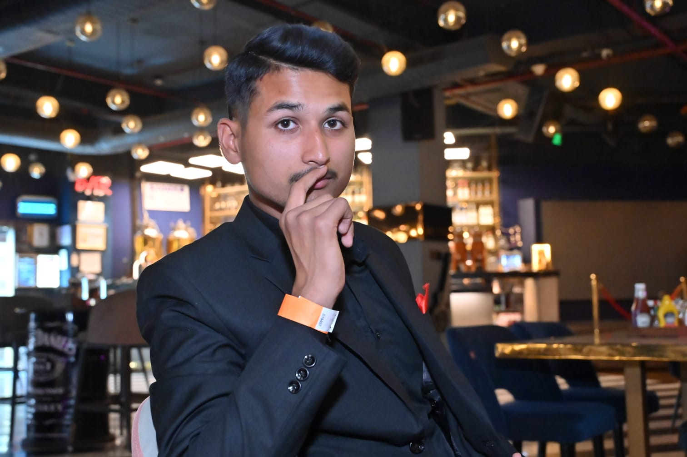

About Me
Hi, I'm Utkarsh — a passionate and driven individual with a deep commitment to learning, growth, and leadership. I’m currently pursuing a B.Tech in Electronics and Communication Engineering and working toward my lifelong dream of joining the Indian Army.
My Journey and Inspiration
Since childhood, I’ve been fascinated by the discipline, courage, and sense of purpose that define the armed forces. My inspiration stems from legends like Major Sandeep Unnikrishnan and Field Marshal Sam Manekshaw, whose unwavering bravery and leadership left a lasting impact on me. Their stories have shaped my mindset and instilled in me a drive to serve my country with honor and dedication.
Education
My educational journey has played a crucial role in shaping my personality and interests. I started my schooling at St. Anthony’s Senior Secondary School in Barabanki and later joined Lucknow Public School, South City, Lucknow, where I honed my leadership skills and academic interests.
Academic and Technical Interests
My studies in Electronics and Communication Engineering have sparked a strong interest in military technology and secure communication systems.
Passion for Web Development
Beyond academics, I am passionate about full-stack web development and continually working on projects that challenge and refine my technical skills.
Future Goals
I aim to merge my technical expertise with my military aspirations to contribute to advancements in defense technology while staying true to my roots.